Acid sulfate soils (ASS) result from processes that release H2SO4 into the soil ‘system’ as the soil ripens. The term also refers to soils in which H2SO4 has been, is being, or will be produced in amounts that have lasting effects on soil behaviour and on adjacent waters. Such soils occur in virtually all climatic zones worldwide, with most located in relative recent coastal marine deposits in sub-tropical and tropical regions (Gardner et al. 2002). Land use changes for agriculture, urban development, flood mitigation and for roads are often implicated in allowing oxidation to commence and continue, with consequential releases of large quantities of acid and the subsequent mobilisation of potentially toxic levels of Fe, Al, Mn and possibly heavy metals and metalloids such as arsenic (Dent 1992; Powell and Ahern 2000).
Of most significance in eastern Australia are Holocene marine sediments deposited during the last 6000 to 10 000 years, when sea levels were around 1–1.2 m higher than present. During and following this marine transgression, sea or brackish water with SO42– flooded sediments containing organic detritus from coastal vegetation such as mangroves, particularly in sub-tropical and tropical environments. Sulfate-reducing bacteria (e.g. Desulfovibrio species) flourish under such conditions in the absence of O2, breaking down the OM and reducing SO42–, ultimately to FeS2, as outlined in Eqn. 1 and Eqn. 2.
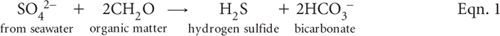
The overall reaction (Dent 1986) of pyrite formation, assuming Fe2O3 as the source of Fe, is shown in Eqn. 2. Generally, sediments formed in warmer regions have a higher concentration of sulfides than corresponding sediments of colder regions.
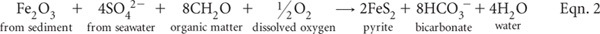
Pyrite is the major form of reduced S in most coastal marine-derived sediments and in ASS but other forms occur, such as marcasite (white iron pyrite, also FeS2 but with a different structure, symmetry and crystal shapes). In addition, iron monosulfides (FeS; often termed acid volatile substances) commonly form in fresh, bottom sediments and as coatings on pyrite framboids. Monosilfides have the potential to generate acid on oxidation more rapidly than pyrite (Gardner et al. 2002; Smith 2004).
Pyrites and monosulfides in farmlands are usually associated with low-lying, water logged soils: e.g. Hydrosols and humic gleys, which are soils that are continually or intermittently moist, with or without a peaty covering, but with dark-coloured organic-mineral horizons of moderate thickness underlain by mineral gley horizons. Provided the pyrite remains covered with water, the material is stable and the pH is often weakly alkaline to slightly acidic. These are sometimes termed potential acid sulfate soils (PASS), because of their potential to form H2SO4 following oxidation. In contrast, actual acid sulfate soils (AASS) are very strongly acidic (usually soil pH values <4.0), due to earlier release of H2SO4. Because oxidising conditions often overlay reducing conditions in the same soil profile, AASS and PASS can apply to different parts of the same profile. The term ASS is used to refer to the whole profile of these kinds of soils.
Old root channels are influential in ASS. They initially provide a source of organic material, permit the rapid entry of sea water, supplying SO42– and rapid removal of bicarbonate-rich waters (Eqns. 1 and 2). Subsequent partial oxidation of pyrite produces jarosite [KFe3(SO4)2(OH)6], a pale yellow-coloured mineral often seen in ASS affected areas. The formation of jarosite requires oxidising conditions, the presence of K+ and a pH ≤3.7 (van Breeman 1973). Jarosite has low water solubility (Ksp = 10–98.6) and obtains its K+ from acid-weathering products of alumino-silicates and/or from exchangeable K+ present in the soil. Moreover, other minerals in the alunite–jarosite group can occur, such as natrojarosite (Na+ substitutes for K+) and hydronium jarosite (H3O+ substitutes for K+). Consequently, both pyrite and jarosite are not uniformly distributed through most soil profiles, making representative sampling difficult to achieve. As a broad rule of thumb, ASS in coastal regions are highly unlikely to occur at uncontaminated sites with current-day surface elevations of 3–10 m above mean sea level (Gardner et al. 2002). In addition, ASS deposits are unlikely to occur in river systems with freshwater outflows much larger than tidal exchange volumes (White et al. 1996).
Pyrite contained in ASS can range from 0.1% to 18% dry wt, with median values commonly around 1.5%. Agreed ‘action levels’ of oxidisable S in Eastern Australia that trigger further management range from 0.03% S in sands, 0.06% in medium-textured soils, and 0.1% S in fine-textured soils (Ahern et al. 1998).
In addition to desktop assessment based on topographic and ASS maps, two principal approaches are used to recognise ASS, and to indicate risks and land management options. These are:
• visible on-site indicators (e.g. iron staining, water colour, vegetation, jarosite), and
• laboratory and field testing.
Visible on-site indicators
Firstly, low pH (i.e. pH ≤4) in streams and swamps, inclusive of SO42–, can cause natural waters to become milky green (indicating dissolved Fe2+) through to bluish green of high clarity (indicating low pH and high dissolved Al concentration). More commonly, natural waters, stream banks and stream sediments can develop rust or ochre coloured stains of Fe oxyhydroxides and oxides. Flocs and ‘ropes’ of these may develop in rivers, particularly following major run-off events.
Secondly, substantial corrosion to concrete structures such as culverts and bridge pylons can be expected. The process involves exfoliation and dissolution of concrete structures through formation of etteringite [e.g. (CaO)3(Al2O3)(CaSO4)3.32H2O], a product resulting from reaction between gypsum and calcium aluminates in concrete.
Thirdly, chronic acidity promotes the dominance of acid-tolerant plants such as water lilies, sedges, marine couch, melaleuca, casuarina and phragmites. Acid tolerant fish are favoured and in extreme cases, fish kills may occur due to Al toxicity, although tissue hypoxia may also be a factor due to chemical oxygen demand (Gardner et al. 2002). Acidified drain waters in coastal Eastern Australia have been linked to the prevalence of epizootic ulcerative syndrome (red-spot disease), although this fish disease can occur in waters of widely varying pH (Sammut et al. 1995).
Fourthly, when heavy-textured ASS are exposed, trapped H2S can be liberated, easily identified immediately from its distinctive ‘rotten egg’ smell. H2S production is an important stage in pyrite formation and its rate of production from SO42– reduction (see Eqn. 1 for example) is always faster than the subsequent reaction transforming it into FeS2 (White and Melville 1993).
Finally, the presence of yellow, butter-like material, especially around the edges of prior root channels and along drain banks and cuttings, is indicative of jarosite. This mineral commonly forms when PASS material is excavated and allowed to oxidise.
Laboratory and Field Testing
The chemistry of ASS can be complex, and so too can be their analysis. Because of this complexity, there is no universal, low cost, laboratory or field analytical procedure that provides all the information required to effectively characterise ASS and to provide help for their management. Several laboratory tests (e.g. Sullivan et al. 2000; Rayment et al. 2003; Ahern et al. 2004c; Anon 2008) and field tests (e.g. Dent and Bowman 1996; Plunkett et al. 2003; Raymond and Rayment 2003, Watling et al. 2004), however, have been developed in Eastern Australia for characterising and determining potential environmental risks from these soils, plus related attributes such as neutralising value and lime requirements. Details are summarised in Table 20.1, with more information provided in preambles to individual methods.
Choice of method depends upon the reason/s for testing, whether approximate results are all that are necessary, equipment in the laboratory, how quickly a result is required, and the quantum of funds allocated for testing. For example, the field tests included in this chapter are usually cheaper and faster than the more reliable and accurate laboratory alternatives provided. Field testing does enable the rapid testing of multiple sites and profile segments close to when earth-work decisions must be made. Confidence in the field-derived findings improves with local experience and when supported by tests of corresponding ASS attributes in an accredited laboratory.
Laboratory testing is always preferred for precise studies. In addition, all components of the soil’s acid–base budget warrant consideration for critical studies on net acidity and liming rates for ASS. Two suites of analysis that take these components into account are the ‘chromium suite’ and the ‘SPOCAS suite’, outlined diagrammatically in Figures 20.1 and 20.2 (Ahern et al. 2004b). The complexity of each suite depends on the initial soil pH. Several determinations and calculations may need to be made. It is noteworthy that total S determinations alone (see Chapter 10) do not equate to the actual or potential acidity of ASS, nor does knowledge of total soil S alone account for acid neutralising reactions in the soil that may decrease or counteract potential acidity due to the oxidation of sulfides.
Moist soils sampled immediately prior to examination (with any free-water discarded) are used for field tests. For all Chapter 20 ASS tests intended for laboratory use, however, it is essential that soil samples reach the laboratory in a manner that limits or prevents atmospheric exposure that could trigger oxidation reactions after sampling. Samples should be dried at 85°C soon after receipt at the laboratory and subsequently ground to <0.5 mm particle size, after removing visible shell, stones and litter. Finer grinding to a powder (e.g. in a ring mill to <75 μm) is recommended by Ahern et al. (2004a) and in Australian Standards (see Anon 2008) for most ASS methods. More recent research, however, suggests this tedious and costly step may not always be warranted (D Lyons, A McElnea, N Finch and C Tallis unpublished report 2009).
Table 20.1. Summary detaÕs of method codes, method titles, technologies and notes on laboratory and field tests described in this chapter. These method codes do not always harmonise with those used in the ASS Laboratory Guidelines of Ahern et al. (2004c).
Code |
Technology |
Test method |
Notes |
20A1 |
Distillation and titration. |
Chromium reducible S (SCR). |
Reliable and reasonably quick laboratory method for reduced inorganic S but has safety and environmental issues. |
20B1 |
Extraction followed by pH measurement. |
SPOCAS acid trail – titratable actual acidity (TAA). |
Good laboratory estimate of actual soil acidity. Negligible safety and environmental issues. |
20C1 |
Extraction–peroxide oxidation followed by pH measurements. |
SPOCAS acid trail – titratable peroxide acidity (TPA) and net (excess) acid neutralising capacity (a-ANCE). |
Logical companion to Method 20B1 for ASS. Apart from peroxide, has few safety and environmental issues. |
20D1 |
Extraction/analysis. |
1 M KCl-extractable S, Ca and Mg. |
Empirical extraction. |
20E1 |
Extraction–peroxide oxidation/analysis. |
1 M KCl-extractable S, Ca and Mg after peroxide oxidation. |
Empirical extraction; results influenced by completeness of peroxide oxidation step. |
20F1 |
Acid extraction/analysis. |
Sulfur – 4 M HCl extraction (SHCl), ICPAES finish. |
Empirical extraction; expect higher results by ICPAES when soils contain high OM. |
20F2 |
Sulfur – 4 M HCl extraction (SHCl), ion chromatography finish. |
Empirical extraction; expect slow, slightly low but reliable results by IC across all soils. |
|
20G1 |
Extraction/analysis. |
Peroxide residual acid soluble S (SRAS). |
Empirical extraction; results influenced by completeness of peroxide oxidation step. |
20H1 |
Supplementary chemical tests. |
Acid neutralising capacity – acid reacted and back titration (ANCBT). |
Useful estimate of ANCBT. |
20I1 |
As above. |
Acid neutralising capacity – from SPOCAS. |
Useful estimate, although likely to be less reliable than Method 20H. |
20J1 |
Suite of relatively simple soil chemical tests. |
Field approximation of ASS hazard: |
Useful estimates at low cost. Apart from peroxide, has few safety and environmental issues. |
20K1 |
Soil texture (by hand), relatively simple soil pH tests (one following peroxide oxidation), plus a ‘look-up’ table. |
Quick field approximations of ASS presence and associated lime requirement for drain-spoil: Field texture class; Field pH test (pHF following H2O2 oxidation (pHFOX); Lime rate); Field pH from ‘look-up’ table. |
Useful, low-cost estimates calibrated for canelands of Eastern Australia. Apart from peroxide, the tests have few safety and environmental issues. |
†Now referred to as Titratable actual acidity
The Cr reduction method (SCR method) is based on the conversion of reduced inorganic S to H2S by a hot acidic CrCl2 solution; the evolved H2S gas is trapped quantitatively in a Zn acetate solution as solid ZnS. The ZnS is then treated with HCl to release H2S into solution, which must then be quickly titrated with I2 solution to the blue-coloured end point indicated by the reaction of I2 with starch.
This laboratory method is relatively quick. It reliably measures reduced inorganic S compounds in soils and sediments (Sullivan et al. 2004). Those measured are: i) pyrite and other Fe disulfides; ii) elemental S, and iii) acid volatile sulfides (e.g. greigite and mackinawite). The method can be made specific to the Fe disulfide fractions if pre-treatments are used to remove the acid volatile sulfides and elemental S fractions. Importantly, safety protocols must be observed at all times as the method uses and produces toxic chemicals: H2S is a flammable gas (flash point of –82°C, explosion limits of 4.3–46%, and an auto-ignition temperature of 260°C), and Cr is a potential environmental contaminant.
The SCR method is not subject to significant interferences from S in either organic form or inorganic form (e.g. gypsum) as can occur with peroxide oxidisable methods (Sullivan et al. 1999). It is arguably the most reliable chemical measure of reduced inorganic S and is particularly suited to reduced and organic soils. The method is recommended for very low sulfidic soils as it has good sensitivity and precision around the action limits that trigger the need for the management of ASS in some Australian states. The reporting limit of the method described is around 0.02% S, with the range of 0–10% S achieved by varying soil sample weights. Sullivan et al. (1999), using a 5.0% pyrite standard and a slightly different method, had a pyritic recovery of 98.7%. Canfield et al. (1986) recorded 95.9% recovery, while Raiswell et al. (1988) reported ‘close to 100%’ recovery using similar Cr reduction methods.
See Figure 20.3.
Zinc Acetate Solution
Dissolve 60 g of zinc acetate dihydrate [Zn(O2CCH3)2(H2O)2] in 1.5 L of deionised water. Add 200 mL of 28% ammonia solution (NH4OH) and make to 2 L with deionised water.
Aqueous 6 M Sodium Hydroxide (NaOH)
With care, dissolve 24.0 g NaOH in a small volume of deionised water then make to 100 mL. Store in a sealed plastic reagent bottle to avoid contact with air.
Standard 0.025 M Sodium Thiosulfate
Obtain commercially (or dilute from a more concentrated commercially-prepared standard solution). Alternatively, prepare by dissolving 6.205 g of Na2S2O3.5H2O in deionised water (see Note 1), add 1.5 mL of 6 M NaOH, mix well and make to 1.0 L with deionised water in a volumetric flask. This locally-prepared Na2S2O3 solution is used to standardise fresh I2 Solution. Standardisation is based on oxidisation of thiosulfate to tetrathionate (maintain a solution pH of <7.6 in the absence of sodium carbonate or equivalent), wherein one equivalent of thiosul-fate corresponds to one equivalent of I2 (i.e. ½ I2). The chemical reaction is shown in Eqn. 3.
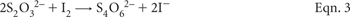
Figure 20.1. Flow diagram for acid-base accounting using the chromium suite (adapted from Ahern et al. 2004b).
Figure 20.2. Flow diagram for acid-base accounting for SPOCAS suite (adapted from Ahern et al. 2004b).
Figure 20.3. Distillation apparatus used in the determination of SCR. Nitrogen (N2) gas flow rate is regulated at 2–3 bubbles/sec. Allow the N2 gas to purge the system for ≈3 min between samples.
Figure 20.4. Several SCR distillation units on electric heating mantles in a laboratory fume cupboard. There is a H2S monitor both on the wall and worn by the operator, who is also wearing other protective items.
Dissolve 2 g arrowroot starch and 0.2 g salicylic acid [C6H4 (OH).COOH] in 100 mL of hot deionised water, then cool before use.
Iodine Solution
Dissolve 22.50 g of potassium iodide (KI) in deionised water and add 3.2 g I2. After the I2 has dissolved, dilute to 1.0 L with deionised water and standardise against 0.025 M Na2S2O3 solution using the Starch Solution as an indicator. While so doing, record volume (D mL) of Na2S2O3 solution used in the titration, and the volume (E) of I2 solution titrated. Standardisations should be performed daily.
95% Ethanol
Obtain commercially as methylated spirits.
Chromium Powder
Ideally, this technical grade powder should be no finer than 0.5–1.0 mm for important operator safety reasons (see Note 2).
≈6 M Hydrochloric Acid (HCl)
Prepare by adding ≈585 mL concentrated (ρ = 1.16 g/mL; 31.5–33% w/v) HCl to about 400 mL deionised water slowly and with stirring. Cool, then dilute to 1.0 L. If the concentrated HCl has a specified density of around 1.18 g/mL (i.e. ≈12.3 M or 38% w/v), then the volume of HCl required is ≈488 mL/L.
Refer to Figure 20.3 for a schematic diagram of the distillation apparatus used for the SCR method and to Figure 20.4 for an example of SCR distillation units in use. Multiple distillation units enhance operator efficiency.
The schematic diagram of the SCR distillation unit (Figure 20.3) is not to scale. The condenser, for example, should be a minimum length of 400 mm, ideally connected to a refrigerated cooling-water supply. Glass/glass connections should be ground and gas-tight, with PTFE sealing rings recommended. Moreover, all stages of the procedure, including digestion of soil, distillation of H2S and subsequent titration to quantify the amount of H2S liberated/absorbed must be conducted in a fume cupboard operating (as a minimum) to AS 2243.8 (Anon 2006), since the method uses and produces toxic chemicals. A sensitive H2S gas sensor with detectors adjacent to the apparatus and the Zn Acetate Solution should be installed, tested regularly, and used to monitor the local atmosphere during the conduct of this procedure. The fume cabinet must be operating with sufficient efficiency to prevent operator exposure to H2S gas in excess of 10 mg/L and much lower if possible.
When the distillation unit/s are set up and tested for efficient and safe operation, weigh 0.5 g (or as guided by Note 3) of finely ground soil (<0.5 mm, previously dried rapidly at 85°C) into a double-neck round-bottom digestion flask. Record the actual sample weight to nearest 0.001 g (W g). Add, with adequate safety precautions (see Note 2), 2.0 g of Cr powder (a calibrated scoop for the batch of Cr powder on hand provides satisfactory accuracy) and 10 mL 95% Ethanol to the digestion flask and swirl to ‘wet’ the sample. Include a reagent blank in each batch and subject it to the same procedure as for soils.
Place the digestion flask in the heating mantle and connect to the condenser. Attach the pressure equalising funnel, making sure the N2 gas flow arm is facing the condensers and that the solution tap is shut. Attach a Pasteur pipette to the outlet tube at the top of the condenser and insert it into a 100 or 150 mL Erlenmeyer flask containing 40 mL of Zn Acetate Solution. Ensure there is a flow of cooling-water flow in the condenser.
Add 60 mL ≈6 M HCl to the glass dispenser in the pressure equalising funnel. Connect the N2 flow to the pressure equalising funnel and adjust the flow to obtain a bubble rate in the Zn Acetate Solution of about 2–3 bubbles/sec. Allow the N2 gas to purge the system for about 3 min. Slowly release the ≈6 M HCl from the dispenser into the double-neck flask. Wait for 2 min before turning on the heating mantle and adjust the heat so that a gentle boil is achieved. Check for efficient reflux in the condenser. Allow to digest for 20 min. This part of the procedure must be undertaken in a fume hood to protect the operator from any H2S gas hazard.
Subsequently, remove the Erlenmeyer flask and wash any of the ZnS formed and adhering to the Pasteur pipette into the Erlenmeyer flask, using deionised water. Add 20 mL of ≈6 M HCl and 1.0 mL of the Starch Indicator Solution to the Zn Acetate Solution and gently mix on a magnetic stirrer (or mix by swirling). Titrate the Zn Acetate trapping solution (now containing ZnS) with the I2 Solution to the first permanent-blue end point. Record the volume of titrant (A mL). Perform the same titration on the blank sample and record the volume of titrant (B mL). As toxic concentrations of H2S gas can be evolved after HCl is added to the Zn Acetate trapping solution, at least that part of the procedure should be carried out with caution and with a minimum of delay after the HCl has been added.
Following completion of the titration and when the solution is cool, discard the residual solutions (these contain Zn, strongly acidic CrCl3, plus soil residue), typically via an interim step of safe, bulk storage prior to later commercial disposal of the hazardous waste. Storage container/s and storage location/s must take account of the occasional possibility of further H2S release, particularly when residues from soils very high and very low in SCR are combined. It is bad practice to knowingly dispose of heavy metals such as Cr and Zn into the municipal sewerage system.
Calculate the concentration (%) of chromium reducible sulfur (SCR) as follows:
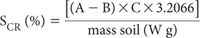
where
A = the volume of I2 Solution (mL) used to titrate the Zn Acetate Solution following soil digestion.
B = the volume of I2 Solution (mL) used to titrate the Zn Acetate Solution following Blank digestion.
C = the Molarity of the I2 Solution, as determined daily by titration of this solution with the standard 0.025M Na2S2O3 solution. The molarity (C) is calculated as:
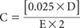
where
D = titration volume (mL) of Standard Sodium Thiosulfate Solution
E = volume (mL) of I2 Solution titrated
W = actual soil mass (g)
Report % SCR on an oven-dry (85°C) basis.
1. Since sodium thiosulfate is deliquescent in moist air, it must first be dried over silica gel contained in a desiccator.
2. Cr exists in nature at valances from 1 to 6, but most commonly at +3 and +6 oxidation states. Of these, Cr3+ is the most stable and least toxic to humans. As the metal (non-ionic) and as a fine powder (e.g. <0.5 μm), Cr powder may cause (among others) pneumoconiosis if inhaled across the long term. The fine powder is combustible and gives off irritating or toxic fumes in a fire. Moreover, Cr is a human carcinogen (may cause lung and throat cancer) and a mutagen. (It has an airborne exposure limit of around 0.5 mg/m3 over 8 h.) Accordingly, a minimum size specification for the Cr powder no finer than 0.5–1.0 μm is suggested to lessen the chance of operator exposure. In addition: (i) a respirator equipped with a P2 filter should be mandated when handling the Cr powder; (ii) any Cr powder spillages should be removed with a HEPA filter (not a standard shop vacuum cleaner), and (iii) management should consider testing urine Cr levels (these should be <15 μg Cr/L of urine) if any staff over-exposure is suspected.
3. The optimum weight of soil material to digest depends on the expected reduced inorganic S content of the soil, and is a compromise.
• If too much reduced inorganic S is digested, then too much H2S will be supplied to the trapping solution. This may either exceed the capacity of the solution to trap the H2S as ZnS (causing an apparent low result) or more likely may require a large volume of I2 titrant.
• If too little reduced inorganic S is digested, then only very small quantities (if any) of H2S will be supplied to the Zn Acetate (trapping) Solution. Samples with very low reduced inorganic S contents will result in very small volumes of I2 titrant being used, with subsequent poor analytical precision.
If the maximum likely reduced inorganic S content can be assessed (such as by a screening analysis using total S), the following guidelines are useful for determining the optimum sample weights to use. (The actual weight used must be accurately known and recorded.)
• for SCR contents <0.5%, use ≈3 g of dry, finely ground sample.
• for SCR contents of ≥0.5 to <1%, use ≈0.5 g of dry, finely ground sample.
• for SCR contents of ≥1% to <3%, use ≈0.1 g of dry, finely ground sample.
• for SCR contents of ≥3%, use ≈0.05 g of dry, finely ground sample.
If the likely SCR content is not known, then at least 0.5 g of dry powdered sample should be used to ensure adequate analytical precision.
The improved Suspension Peroxide Oxidation Combined Acidity and Sulfur (SPOCAS) method (McElnea et al. 2002a) supersedes the Peroxide Oxidation Combined Acidity and Sulfur (POCAS) and related methods (e.g. Latham et al. 2000). The SPOCAS method gives better recovery of S than the POCAS method and less potential for jarosite formation (McElnea et al. 2002a; McElnea et al. 2002b). Moreover, SPOCAS overcomes possible S and acid-loss problems identified by Ward et al. (2002a) and Ward et al. (2002b).
The SPOCAS acid trail involves direct determination of acidity by titration of the 1 M KCl soil suspension (1:40 ratio), whereas the S trail indirectly predicts acidity by using a combination of S determinations and stoichiometric relationships. Two measures of acidity are carried out, specifically TAA (titratable actual acidity) and TPA (titratable potential acidity). Titratable sulfidic acidity (TSA) is the difference between TPA and TAA. All three measures of acidity are conveniently expressed as mol H+/tonne. To convert from mol H+/tonne to %S, divide by 623.7 (Ahern et al. 2004b), when it is assumed all acidity is from pyrite.
The pHKCl-ASS is measured after 4 h extraction with 1 M KCl (followed by overnight standing). TAA is performed on a 1:40 soil/suspension by titration to pH 6.5 (McElnea and Ahern 2004a).
Standard ≈0.05 M Sodium Hydroxide
Dissolve 2.05 g of fresh, high-grade sodium hydroxide (NaOH) in deionised water known not to include carbonates. When the covered solution has cooled to room temperature, make to 1.0 L in a volumetric flask. Standardise against a known weight of potassium hydrogen phthalate (KHC8H4O4), previously dried for 2 h at 120°C and subsequently cooled before use in a desiccator. Note 1 and Method 4D1 provide more details on the use of KHC8H4O4 (molar = normal) as the primary reference standard. For a 5.0 mL volume of exactly 0.05 M NaOH, the equivalent weight of pre-dried KHC8H4O4 is 0.0511 g. Subsequent calculations should use the actual concentration of the NaOH solution.
Standard ≈0.25 M Sodium Hydroxide
Dissolve 10.10 g of fresh, high-grade NaOH in deionised water known not to include carbonates. When the solution has cooled to room temperature, make to 1.0 L in a volumetric flask. Standardise against a known weight of pre-dried potassium hydrogen phthalate (KHC8H4O4), as outlined for ≈0.05 M NaOH, except that for a 5.0 mL volume of exactly 0.25 M NaOH, the required weight of pre-dried KHC8H4O4 is 0.2553 g. Subsequent calculations should use the actual concentration of the NaOH solution.
1.0 M Potassium Chloride
Refer to Method 4C1. Alternatively, dissolve 74.55 g potassium chloride (KCl) and make to 1.0 L with deionised water.
pH Buffers
Obtain commercially or prepare as described in Method 4A1. These should cover the range from ≈pH 4.0–9.2.
Weigh accurately 2.00 g of dry soil (prepared as described earlier in this chapter) into a suitable extraction container and make a 1:40 suspension with 80 mL of aqueous 1 M KCl: include a blank in each batch. Stopper the container and extract soil mechanically (end-over-end shaker preferred) for four continuous hours. Allow the container and contents to stand overnight (for at least 12 h but no more than 16 h). Next day, resuspend contents by briefly shaking container (≈5 min) before quantitatively transferring contents to a separate titration vessel (if not titrating in the same extraction container) using a minimum volume of deionised water. The time between re-suspension and titration should be minimised to limit possible oxidation.
While stirring, measure and record the pH of the suspension (pHKCl-ASS) using a pH meter calibrated with appropriate buffers. Perform a titration to pH 6.5 with standardised NaOH solution using an appropriately calibrated pH meter or auto-titrator (see Note 2). Use the options described, depending on the measured pHKCl-ASS.
(1) If pHKCl-ASS is <4.0, titrate the suspension with stirring to pH 6.5 using the standardised 0.25 M NaOH and record titre volume (mL).
(2) If pHKCl-ASS is ≥4.0 but <6.5, titrate the suspension with stirring to pH 6.5 using standardised 0.05 M NaOH and record titre volume (mL).
(3) If pHKCl-ASS is ≥6.5, no titration is required and TAA has zero value.
Retain the titrated suspension if KCl-extractable sulfur (SKCl), calcium (CaKCl) and magnesium (MgKCl) are to be determined subsequently (see Method 20D1).
where:
V2 = Blank
C1 = Concentration of NaOH (mol/L)
V1 = Volume of NaOH titrant (mL)
M1 = Weight of sample (g)
1000 = Conversion to tonnes
Report TAA (mol H+/tonne) on an oven-dry (85°C) basis.
1. NaOH solutions should be prepared fresh daily or stored in an apparatus capable of excluding CO2. Titrations should be carried out using an auto-titrator, or manually using an A-grade 10 mL burette graduated at 0.02 mL intervals. Titrate to pH 6.5.
2. If using an auto-titrator, the volume of titrant added in each increment should decrease as the endpoint is approached. If titrating manually, titrate slowly to endpoint (pH 6.5) and wait for 20 sec. If pH drops by more than 0.1 units, back-titrate to pH 6.5.
TPA represents the amount of acid released from the complete oxidation of sulfides (and OM) (combined with any pre-existing TAA), balanced against any buffering provided by acid-neutralising components in the soil (McElnea and Ahern 2004b).
In some soils, buffering supplied by acid neutralising components may exceed acid generated by oxidation of sulfides, resulting in an ‘excess’ acid neutralising capacity. Research conducted by Latham et al. (2000) showed excess carbonate (if present) can interfere with the efficiency of peroxide oxidation. Accordingly, a back titration step with HCl (to pH 4) is included as a precaution, following initial peroxide digestion, as well as a subsequent peroxide digestion step.
Soil samples are subjected to extreme oxidising conditions using H2O2. Continual application of heat in the presence of peroxide ensures all sulfide is converted to H2SO4. Titratable acidity is performed on a 1:40 soil/suspension with 1 M KCl to pH 6.5. The suspension is analysed by an auto-titrator (or manually) for pH and acidity.
Standard ≈0.05 M Sodium Hydroxide
As for Method 20B1.
Standard ≈0.25 M Sodium Hydroxide
As for Method 20B1.
2.66 M Potassium Chloride
Dissolve 198.81 g of potassium chloride (KCl) and make to 1.0 L with deionised water.
pH Buffers
Obtain commercially or prepare as described in Method 4A1. These should cover the range from pH ≈4.0–9.2.
30% Hydrogen Peroxide
Use only 30%, AR grade hydrogen peroxide (H2O2). Check the acidity of each new batch of chemical, which should contain less than the equivalent of 6 mol H+/tonne. Adjust, typically with 0.05 M NaOH, to pH 5.5 before use in the ‘final oxidation’ step. Handle and store this reagent with caution, as H2O2 is hazardous. Users should wear PVC gloves and safety glasses when using the chemical. Operations involving H2O2 should be carried out in a fume cupboard or where there is excellent ventilation.
Copper Chloride Solution (400 mg Cu/L)
Prepare by dissolving 1.073 g copper chloride dihydrate (CuCl2.2H2O) and dilute to 1.0 L with deionised water.
Standard ≈0.5 M Hydrochloric Acid (HCl)
Prepare by adding 50 mL concentrated (ρ = 1.16 g/mL; 31.5–33% w/v) HCl to about 400 mL deionised water slowly and with stirring. Cool, then dilute to 1.0 L. If the concentrated HCl has a specified density of around 1.18 g/mL (i.e. ≈12.3 M or 38% w/v), then the volume of HCl/L is ≈41.71 mL. Standardise against recently standardised ≈0.25 M NaOH using an auto-titrator or manually using phenolphthalein as indicator. Make appropriate adjustments to subsequent calculations if not exactly 0.5 M HCl.
First Action – all soils
Weigh accurately 2.00 g of finely ground soil (previously dried rapidly at 85°C; M2 g) into a suitably labelled and tared flask (e.g. 250 mL tall-form borosilicate glass beaker) on which the 50 mL level is accurately and clearly marked. Make provision for the inclusion of two blanks in each ‘analytical run’. In a fume cabinet (and wearing safety-glasses, laboratory coat and gloves), add 10 mL of 30% H2O2 to each flask and swirl to mix (see Note 1).
After 30 min, add deionised water with further swirling to make the total volume of suspension in the beaker between 45–50 mL (continue to refer to and follow Note 1).
Place the beaker on a hotplate (or steam bath) located in a fume cupboard for 30 min max and maintain sample and liquid contents at 80–90°C. If the reaction becomes too violent, remove from heat source and resume only when the violent reaction has subsided. Swirl samples on the hotplate periodically (e.g. every 10 min) and add deionised water as required to maintain volume between 45–50 mL, and to wash soil residue from the internal sides of the beakers. Allow samples to cool to near room temperature.
Add a second 10 mL aliquot of H2O2, waiting 10 min before returning flask to the hotplate for a maximum of 30 min, adopting the procedure outlined above. Allow samples to cool to room temperature and make to 50 mL with deionised water. Measure the suspension pH (pHOX), while stirring using a suitably calibrated pH meter and electrode. Use the appropriate option from Table 20.2, based on measured pHOX.
Table 20.2. Values of pHOX and corresponding recommended laboratory actŠns on samples.
pHOX value or range |
Recommended laboratory actŠn |
Comments |
≤2 |
Recommence the peroxide oxidation step, etc from the start, using a fresh 1.00 g soil sample. |
Indicative of soil with high sulfide levels. |
>2 but ≤6.5 |
Continue from peroxide decomposition step. |
|
>6.5 |
Treat soil according to carbonate modification before continuing with peroxide decomposition step. |
Suggests the soil contains active carbonate, probably rendered more reactive following fine grinding during soil sample preparation. |
Carbonate modification for soils with pHOX>6.5: (HCl titration to pH 4)
Quantitatively transfer suspensions from the ‘First Action’ procedure to titration vessels, helped with deionised water. Carry out a slow titration (7–10 min minimum; best done on an auto-titrator) with 0.5 M HCl (C3) to pH 4. (Refer to Note 2 if calculating a-ANCE, and record the volume of titre (V3 mL).) Quantitatively transfer to original digestion beaker the pH 4 contents of the titration vessel, add 25 mL of 30% H2O2, and digest for a maximum of 1 h or until the oxidation reaction ceases.
Peroxide decomposition
Add 1.0 mL of CuCl2 (400 mg/L Cu Solution) to the H2O2 digestion beaker to decompose any residual peroxide. Speed the reaction by returning the digestion beakers plus Cu to the hotplate set to operate at 80–90°C and remove when peroxide decomposition has ceased (or after 30 min max). Volume of contents should be maintained at ≈45 mL during this time by adding deionised water as necessary.
When contents have cooled to near room temperature, quantitatively transfer these to a titration vessel using 30 mL of ≈2.66 M KCl. Give the digest beaker a final rinse with deionised water (into titration vessel), to obtain a suspension volume of ≈80 mL of 1 M KCl (i.e. for a 2.00 g sample, a final soil/solution ratio of 1:40).
Measure and record pH of suspension using a suitably calibrated pH meter and electrode prior to commencement of the TPA titration. This pH is termed pHTPA. Use the appropriate option from Table 20.3, based on the measured pHTPA.
Table 20.3. Values of pHTPA and corresponding recommended laboratory actŠns on samples and blanks.
pHTPA value or range |
Recommended laboratory actŠn |
≤3 |
Titrate with stirring to pH 5.5 using standardised ≈0.25 M NaOH (molarity of C1) and record titre (V4 mL) prior to final oxidation. |
>3 but ≤5.5 |
Titrate with stirring to pH 5.5 using standardised ≈0.05 M NaOH (molarity of C2) and record titre (V5 mL) prior to final oxidation. |
>5.5 but ≤6.5 |
Go directly to final oxidation step. |
>6.5 |
TPA is zero. Do not perform final oxidation step. |
Blank <5.5 |
Titrate blank to pH 5.5 using 0.05 M NaOH and record titre (V7 mL). |
Final oxidation (for solutions with pHTPA now <6.5)
Add 1.0 mL of 30% H2O2 (that has been adjusted to pH 5.5 with dilute NaOH solution). Allow pHTPA to stabilise, then titrate with 0.05 M NaOH (molarity of C2). Record titre (V6 mL) of alkali added to reach pH 6.5. For blanks, record corresponding titre (V8 mL).
Retain the titrated suspension if peroxide KCl-extractable sulfur (SP), calcium (CaP) and magnesium (MgP) are subsequently to be determined: see Method 20E1.
Calculate TPA (to pH 6.5) and express as mol H+/tonne of soil.
For 0.25 M and 0.05 M NaOH titrations:
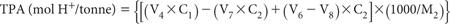
If only 0.05 M NaOH is titrated:
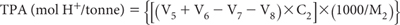
Report TPA (mol H+/tonne) on an oven-dry (85°C) basis.
If relevant, also report Net (excess) Acid Neutralising Capacity [a-ANCE (mol H+/tonne)], also on an oven-dry (85°C) basis (see Note 2).
1. Expect the initial addition of 30% H2O2 to cause an exothermic reaction, which for soils high in reactive pyrite can be quite violent (see Figure 20.5). The addition of deionised water at the first sign of vigorous reaction will help moderate the situation. Additionally, the reaction may become more vigorous with heating. In such cases, remove the relevant flasks from heat, add a small quantity of deionised water, and return the flask to the hot plate or equivalent when the reaction vigour has subsided. It is important to add water to maintain a volume of 45–50 mL; occasional washing with deionised water helps dissolve salts that adhere to the sides of the container above the liquid line.
Figure 20.5. Examples of insignificant oxidation reaction involving soil and H2O2 (left), and more vigorous oxidation reaction involving soil and H2O2 (right).
2. The HCl-titration is designed to dissolve any reactive carbonate that may be present, as carbonate can interfere with the efficiency of peroxide oxidation. The same titration can also be used to calculate a Net (excess) Acid Neutralising Capacity (a-ANCE) of the soil (McElnea and Ahern, 2004b). In so doing, a slow titration to pH 4.0 is required to ensure maximum reactivity of the carbonate, as the dissolution of any solid-phase carbonate into the soil extract/digest can be quite slow. To calculate a-ANCE, use the following formula:
Calculation of a-ANCE (mol H+/tonne)
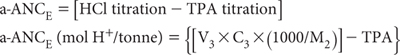
3. The final oxidation step is introduced to ensure complete conversion of Fe2+ to Fe(OH)3 during titration.
This method determines soluble plus exchangeable (or adsorbed) sulfur (SKCl), calcium (CaKCl) and magnesium (MgKCl) in the 1 M KCl soil suspension (1:40) from Method 20B1. While SKCl can be determined by several analytical finishes, ICPAES is preferred, as all three analytes can be rapidly determined in the same extract. Both CaKCl and MgKCl from this method have additional value when compared to Ca and Mg in peroxide digests (CaP and MgP) obtained from Method 20E1. The comparisons (differences) indicate the extent of release via acid dissolution of Ca and/or Mg carbonate/s, oxide/s or hydroxide minerals. Thus, an estimate of the acid neutralising capacity of the soil is achieved (see Method 20I1).
≈ 1 M Hydrochloric Acid
Add about 100 mL HCl to about 400 mL deionised water, mix, cool and dilute to 1 L.
Primary Mixed Standard for ICPAES analysis of Ca, Mg and S
1 L contains 1000, 200 and 1000 mg of Ca, Mg and S, respectively.
Prepare from separate commercial standard concentrates each of 10 000 mg/L of Ca, Mg and S or dry calcium carbonate (CaCO3, Primary Standard grade) by heating at 110°C to constant weight. Also dry magnesium oxide (MgO, heavy) by heating in an electric muffle furnace at 600 to 700°C for 2 h, and dry anhydrous sodium sulfate (Na2SO4) at 105°C for 4 h. Cool and store each of the chemicals separately in desiccators without desiccant.
Weigh 2.4973 g CaCO3, 0.3316 g MgO and 4.430 g Na2SO4 and wash each into a 1.0 L conical flask with about 50 mL deionised water. Add 240 mL ≈1 M HCl and boil until all CO2 is expelled. Cover and allow to cool, then transfer quantitatively to a 1.0 L volumetric flask. Dilute to volume with CO2 free (boiled) deionised water and mix well. Transfer to a clean plastic bottle. Should MgO not assay at 100% purity, adjust the weight according to the assay obtained.
Combined Ca, Mg and S Secondary Standard
1 L contains 100.0, 20.0 and 100.0 mg of Ca, Mg and S, respectively.
Accurately dilute 100 mL of Mixed Ca, Mg and S Primary Standard to 1.0 L in a volumetric flask using deionised water.
Combined Working Standards for ICPAES analysis of Ca, Mg and S
Prepare by diluting specified volumes (mL) of Primary and Secondary Standards as per Table 20.4. To each working standard (1.0 L volume) add 14.9 g of analytical grade KCl to match the matrix of the samples, prior to making to volume. Actual concentrations of Ca, Mg and S in these solutions are tabulated (Table 20.4), as are direct soil concentrations (%), based on a 1:40 soil/solution ratio and a 1:5 dilution.
Proceed from the end of the titration step in Method 20B1. Quantitatively transfer contents of the titration vessels to tared or weighed beakers using deionised water. Add deionised water to the beaker until the beaker and contents weigh 403.5 g plus the weight of the original soil. This equates to a 1:5 dilution of extract to 0.2 M KCl, which is a more appropriate salt load for subsequent instrumental analysis by ICPAES.
Stir the solutions to homogenise and centrifuge, or filter through Whatman No. 3 filter papers (or other suitably thick, medium-speed, high-retention paper) into suitable tubes, prior to the analytical finish by a suitable technique, with ICPAES preferred.
Set up and operate the ICPAES instrument as advised by the manufacturer. Appropriate wavelengths for Ca and Mg are 430.25 nm and 285.21 nm, respectively. The most likely wavelength for S is 182.04 nm, but other wavelengths are possible (see Method 10B3 for examples and for more details). Calibrate the instrument using a range of Combined Working Standard Solutions, guided by examples in Table 20.4. A reagent blank should also be measured and adjustments made as necessary.
Table 20.4. Volumes of Ca, Mg and S Primary and Secondary Standards required for Working Standards, plus solutŠn and soÕ concentratŠns.
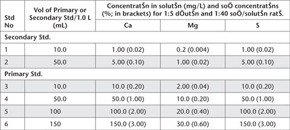
Report soluble plus exchangeable sulfur (SKCl), calcium (CaKCl) and magnesium (MgKCl) (%) on an oven-dry (85°C) basis.
This method determines peroxide-extractable S (SP), peroxide-extractable Ca (CaP) and peroxide-extractable Mg (MgP) after peroxide digestion. SP represents soluble plus exchangeable/adsorbed SO42–, SO42– from gypsum, SO42– from oxidation of sulfides, and SO42– released by breakdown/oxidation of OM. The method is used in conjunction with SKCl to calculate SPOS (POS – potential oxidisable S; SPOS = SP – SKCl). Sulfates from jarosite and iso-structural minerals are not recovered to any appreciable degree.
The method also quantifies soluble Ca2+ from gypsum, as well as Ca2+ and Mg2+ released by acid dissolution of Ca and/or Mg carbonates, oxides or hydroxide minerals. The CaP and MgP results are used in conjunction with CaKCl and MgKCl to calculate reacted Ca and Mg (CaA and MgA).
Calibration Standards for ICPAES analysis of Ca, Mg and S
As for Method 20D1.
Proceed from the end of the titration step in Method 20C1. Quantitatively transfer contents of the titration vessels to tared or weighed beakers using deionised water. Add deionised water to the beaker until the beaker and contents weigh 403.5 g plus the weight of the original soil. This equates to a 1:5 dilution of extract to 0.2 M KCl, which is a more appropriate salt load for subsequent instrumental analysis by ICPAES.
Stir the solutions to homogenise and filter through Whatman No. 3 filter papers (or other thick, medium-speed, high-retention paper), into suitable tubes for the analytical finish by a suitable technique, with ICPAES preferred. Retain the soil residue if residual acid soluble sulfur (SRAS, 20F1) is to be determined.
Set up and operate the ICPAES instrument as advised by the manufacturer. Wavelengths for Ca and Mg are 430.25 nm and 285.21 nm, respectively. The most likely wavelength for S is 182.04 nm, but other wavelengths are possible (see Method 10B3 for examples and more details). Calibrate the instrument using an appropriate range of Combined Working Standard Solutions, guided by examples in Tables 20.4. A reagent blank should also be measured and adjustments made as necessary.
Report peroxide-extractable S (SP), peroxide-extractable Ca (CaP), and peroxide-extractable Mg (MgP) (%) on an oven-dry (85°C) basis.
Considerable retained acidity may be stored in ASS in the form of jarosite and similar relatively insoluble Fe and Al hydroxy sulfate compounds. Their acidity and S are not recovered in the 1 M KCl suspensions of TAA (Method 20B1) and SKCl (Method 20D1); however, they are soluble in 4 M HCl as are other sources of SO42–. The difference in the S extracted by 4 M HCl and by 1M KCl [SNAS (net acid soluble S) = SHCl– SKCl] provides an estimate of the insoluble (jarositic) S content of soils (McElnea and Ahern 2004c). Sulfur is commonly determined by ICPAES. On highly organic soil samples, however, 4 M HCl may extract appreciable organic S. Therefore, unless a SO42– specific technique is used, such as IC (Method 20F2), the SNAS result will be inflated.
The method involves the extraction of dry soil with 4 M HCl at a ratio of 1:40. The extract is centrifuged and the clear supernatant is analysed for S. Results are reported as % S (ideally SO4-S) on an oven-dry basis. The 4 M HCl treatment will extract soluble and adsorbed SO42–, as well as SO42– from gypsum, jarosite or other insoluble SO42–salts. Acid volatile sulfides will be dissolved and lost to H2S after 4 M HCl extraction, if not already lost in the sampling, transportation or drying process. Pyrite-S will largely remain unaffected by this acid extraction process (Morse and Cornwell 1987).
4 M HCl
Add 400 mL of 31.5–33% w/v (or equivalent) HCl to an equal volume of deionised water, mix well, cool to room temperature, then make to 1.0 L with deionised water.
Sulfur Primary Standard
1 L contains 5000 mg of S.
Dry anhydrous sodium sulfate (Na2SO4) at 105°C for 4 h, cool in a desiccator, then accurately weigh 22.1491 g, dissolve, then make volume to 1.0 L in a volumetric flask. Add 2 drops of chloroform (CHCl3) to suppress biological activity and store solution in borosilicate glass, preferably in the dark.
Sulfur Working Standards
Accurately add 10.0, 25.0, 50.0 and 100.0 mL Sulfur Primary Standard (5000 mg/L) to 1.0 L volumetric flasks, each containing 400 mL of 31.5–33% w/v HCl (or equivalent) and make to volume with deionised water. These S Working Standards have solution concentrations of 50, 125, 250 and 500 mg S/L. Soil equivalent concentrations for a 1:40 soil/solution ratio are 0.20, 0.50, 1.00 and 2.00% S. For volumes >10 mL, use a 50 mL burette.
Weigh 2 g ± 0.01 g of finely ground soil (<0.5 mm, previously dried rapidly at 85°C) into a labelled 250 mL polyethylene bottle. Include a blank sample with each batch of samples. Dispense 80 mL of 4 M HCl into each bottle to make a 1:40 soil suspension, noting that soils high in carbonates can react vigorously with HCl and generate CO2 gas. Wait until any effervescence subsides before stoppering the bottle. Shake (ideally end-over-end) for 16 h. Remove from tumbler, allow samples to stand for ≈30 min, centrifuge for 15 min or filter through thick, medium-speed, high-retention filter paper to obtain particulate-free extracts.
Determine SHCl using ICPAES, guided by details provided in Method 10B3, using an appropriate suite of S Working Standards.
Report SHCl (ICPAES) as % S on an oven-dry (85°C) basis.
This method is identical to Method 20F1, apart from the analytical finish, which is based on ion chromatography. Because the IC can be made specific for SO42– in solution (rather than for total S in solution), results by this method will almost always be lower than corresponding results by Method 20F1. Clients of laboratories with the option of using both instruments (ICPAES or IC) would be best served by specifying this method when working with highly organic soil samples.
The method described is based on chemically suppressed IC, although single-column IC with electronic suppression of eluent conductivity is equally suitable. See Methods 5A3a and 5A3b for further details on both IC technologies.
As for Method 20F1 for soil extractions and guidance on the preparation of standard solutions, accepting that dilutions down to around 20 mg S/L will be necessary to harmonise with optimal instrument performance in the presence of a strong background of Cl–. For all other solutions, refer to Method 5A3a and to Method 10B4.
Weigh, extract and prepare for analysis as for Method 20F1, then analyse for SO4-S by IC, guided by Method 5A3a and Method 10B4, and adapting calculations to account for the 1:40 soil/solution ratio and for additional dilutions.
Other than dilution, the only preparation required after soil extraction is the removal of particulate matter >0.20 μm by filtration or centrifugation. Analysis can be completed sequentially within ≈30 min or less, using a few mL of extract.
Report SHCl (IC) on an oven-dry (85°C) basis.
Minerals such as jarosite and other insoluble SO42– containing compounds present in the soil are largely unaffected by peroxide oxidation. Occasionally, however, the acidity held in these compounds can be much greater than the sulfidic or actual acidity, particularly when these soils are partially oxidised. Retained acidity needs to be taken into account in acid base accounting and when attempting to make accurate liming recommendations. The SRAS result can be converted to an acid equivalent (a-SRAS) by multiplying %S by 467.8 to convert to equivalent units of mol H+/tonne (Ahern et al. 2004b; see Note 1).
After peroxide digestion and TPA titration, the soil residue may contain insoluble S (e.g. in jarosite or similar relatively insoluble Fe and Al hydroxy sulfate compounds) either present initially in the soil or (less usually) formed during peroxide oxidation. This S represents a store of retained acidity that may be estimated after overnight (16 h) extraction with 4 M HCl of the washed soil residue following determination of SP by Method 20E1. On soils where the presence of jarosite is suspected (e.g. if the pHKCl is <4.5 or jarosite has been noted in accompanying field sampling notes) it is strongly recommended that residual acid soluble S (i.e. SRAS) be performed.
4 M Hydrochloric Acid
As for Method 20F1.
1 M Potassium Chloride (KCl)
Prepare as for Method 4C1.
Proceed from the end of Method 20E1. When performing this residue analysis, first take a suitable volume of filtered solution for SP and corresponding cation analysis (CaP and MgP), then continue to filter the entire soil suspension (transferring all soil residue to the filter paper).
After filtration is complete, wash filter paper with 2 × 10 mL of 1 M KCl then sufficient deionised water (e.g. 4 × 10 mL) to ensure all soluble and adsorbed SO42– has been washed from the soil/filter paper.
When washing is complete, place filter paper (containing washed soil residue) into a suitable extraction bottle and add 80 mL of 4 M HCl. Extract overnight (16 ± 0.5 h), preferably on an end-over-end shaker. Following extraction, filter using thick, medium-speed, high-retention filter paper (or decant and centrifuge) to obtain particle-free extracts.
Determine residual acid soluble sulfur (SRAS) using a suitable technique (ICPAES preferred) and an appropriate range of standards, guided by details provided in Method 20F1.
Report peroxide residual acid soluble S (SRAS; % S) on an oven-dry (85°C) basis.
1. The factor 467.8 is a consequence of the acid-generating stoichiometry of S in jarosite. It ignores adjustments to subsequent liming rate associated with an application-rate safety factor and adjustments for fineness and neutralizing value of the limestone, the latter as discussed in Note 1, Method 16A1. Specifically, when one mole of jarosite containing 2 moles of S is hydrolysed (see Eqn. 4), 3 moles of H+ are generated, which contrasts with 4 moles from pyrite. Hence, the factor for jarosite is 0.75 times the factor for pyrite: i.e. 623.71 × 0.75 = 467.8.
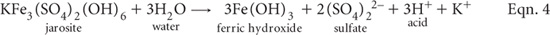
The amount of acidity able to be leached to the environment from ASS may be diminished or even reduced to negligible levels should the soil contain alkaline compounds such as carbonates, soluble silicates and/or hydroxides. Coarse shell material in the soil usually has little effective neutralising capacity in situ due to its small surface area to volume ratio. Accordingly, pre-existing coarse shell material should not be crushed into fine particles during sample preparation for this and similar ASS methods.
Methods employed in estimating acid neutralising capacity (ANC) fall into three categories:
(a) Direct measurement – soil digestion with added acid and back titration of un-reacted acid;
(b) Indirect, via measurement of carbonate – such as Loss on Ignition by Method 6G1. (Assumes all ANC is due to inorganic C), and
(c) Determination of alkaline-earth cations (Ca2+ and Mg2+), as in SPOCAS – assumes all ANC is due to Ca and Mg compounds.
Rapid titration Method 19A1 is not particularly suitable for use on ASS. It uses 1 M HCl, which can sometimes yield an inflated ANC result, leading to an underestimate of potential environmental risk. In contrast, Method 20H1 uses 0.1 M HCl and is applicable to the determination of the neutralising capacity of ASS. It involves heating a known weight of soil sample in a known volume of 0.1 M HCl, followed by back titration of any unused acid to pH 7.0 with standardised 0.25 M NaOH.
Should a more accurate result be required on a low analysis sample (or on samples suspected of being low because the pHKCl-ASS is close to 6.5) a lower molarity NaOH solution may be used (Ahern et al. 2004c), but the increased accuracy thus achieved must be balanced against the risk of atmospheric CO2 contamination.
Standard ≈0.25 M Sodium Hydroxide
Prepare and standardise with dry potassium hydrogen phthalate (KHC8H4O4) as for Method 20B1. This standardisation should be carried out every two to three days. A concentration other than 0.25 M can be used if preferred.
Standard 0.1 M Hydrochloric Acid
Prepare from a commercially purchased HCl standard solution. Alternatively add 10 mL of 31.5–33% w/v (or equivalent) HCl to ≈100 mL of deionised water, mix well, cool to room temperature, then make to 1.0 L with deionised water. Standardise against pre-standardised NaOH or by using sodium tetraborate (Na2B4O7.10H2O), as guided by Method 7A1.
pH buffers
Obtain commercially or prepare as described in Method 4A1. These should cover the range from around pH 4.0–9.2.
Calcium Carbonate
Dry calcium carbonate (CaCO3, Primary Standard grade) by heating at 110°C to constant weight and store in a desiccator prior to use.
Weigh ≈1.0 g (to three decimal places) of finely ground soil (<0.5 mm, previously dried rapidly at 85°C, excluding visible shell) into 250 mL conical beakers. Add 25 mL of deionised water and 25 mL of standard 0.1 M HCl, and cover with a watch glass (see Notes 1 and 2). Place all beakers on a hot plate and boil gently for 2 min. Cool to room temperature, before titrating the unused acid in the beakers with pre-standardised 0.25 M NaOH to pH 7.0. Record the volume of NaOH titrant for each sample (Vs). Also titrate a blank solution (Vbl). Vbl will be close to 10 mL if acid and alkali are 0.10 M and 0.25 M, respectively.
Provided samples and blank are treated the same, the volume and strength of HCl do not feature in the calculation of ANCBT.
Calculate the % CaCO3 equivalent of the sample as:
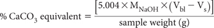
where MNaOH = actual molarity of the NaOH.
Report ANCBT (%CaCO3 equivalent) on an oven-dry (85°C) basis.
1. Prepare at least one blank for each batch of samples.
2. In each run, include an accuracy check which involves a CaCO3 reference. Weigh 0.1 g of pure CaCO3 (accuracy of 0.0001 g). This should react with 20 mL of the 25 mL of 0.10 M HCl. Recovery of AR CaCO3 should be 100 ± 1%.
The determination of Ca2+ and Mg2+ is another means by which acid neutralising capacity in soils may be estimated. The method assumes that the extra Ca2+ and Mg2+ dissolved during peroxide oxidation/digestion compared to that soluble in a 1 M KCl extract (i.e. reacted Ca and Mg) can be used as a surrogate to estimate the acid neutralising capacity of actual and potential ASS (Ahern and McElnea 2004). Relevant terms are:
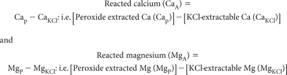
Levels of CaA and MgA reflect the amounts of ‘insoluble’ Ca and/or Mg carbonates, oxides and hydroxides dissolved by the acid generated by the oxidation of sulfides in peroxide digests. In soils with excess carbonates, CaA and MgA may underestimate actual carbonate contents unless the HCl-back titration procedure in SPOCAS has been performed. These Ca2+ and Mg2+ values can be converted to equivalent acid neutralising capacity (e.g. a-CaA) assuming two moles of neutralising is provided per mole of Ca and Mg, respectively.
For individual samples, collate relevant input values (Cap and Mgp) from Method 20E1 and (CaKCl and MgKCl) from Method 20D1 in units of percent (%) on an oven-dry (85°C) basis. It is assumed that two moles of neutralising is provided per mole of Ca and Mg, respectively. Factors to convert to % CaCO3 equivalent (oven-dry) are 2.497 and 4.117 for % Ca and % Mg.
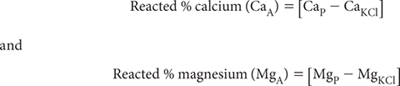
Report % CaA and % MgA on an oven-dry (85°C) basis.
This method is based on that of Dent and Bowman (1996). It is suited to a ‘field laboratory’, requiring only simple equipment and readily available chemicals. Dent and Bowman (1996) saw significant advantages in dealing with soil samples ‘immediately’, as this limited the possibility of drastic changes in the chemistry of actual and potential ASS between sampling and the commencement of critical tests. They also saw difficulties in using results expressed on an oven-dry basis, as highly organic ‘unripe’ ASS may contain as much as 90% water. This can make the volumes that ASS actually occupies hard to assess, unless the dry bulk density of the field sample is known accurately.
The Dent-Bowman Method has three separate components: viz. total (now termed titratable) actual acidity (TAAD-B); total sulfidic acidity (TSAD-B); and residual quick neutralising capacity (RQNCD-B). The method uses a 10 mL, tightly packed field moist soil sample. The TSAD-B test represents the approximate potential acidity that can be released on oxidation and subsequent drainage of the sample material.
Because of the simplicity of the tests and relatively low reagent costs, the operator is encouraged to perform these tests on multiple ‘replicate’ samples, mainly to gain an idea of the point-to-point variability of TAAD-B and TSAD-B, which may be ±30% for closely spaced 10 mL samples of apparently uniform material (Dent and Bowman 1996). Knowledge of this variability has practical importance, as treatments to alleviate acid hazards must deal with the highest concentrations of actual and potential acidity as well as the median. Note that laboratory tests typically deal with sub-samples of profile segments, such as 0–10 cm or 50–60 cm.
Deionised Water
As for Method 3A1. Alternatively, distilled water may be used. If neither of these is available in the field, good quality rainwater (no particulates) may be substituted.
1 M Sodium Chloride
Dissolve 58.44 g LR-grade NaCl in deionised water and make to 1.0 L. If operating remotely, dilute six-fold a saturated solution of NaCl.
Standard 0.1 M Sodium Hydroxide
Prepare by diluting according to instructions an ampoule of standard analytical NaOH concentrate. Alternatively prepare by dissolving 4.10 g of fresh, analytical grade NaOH in deionised water known not to include carbonates. When the covered solution has cooled to room temperature, make to 1.0 L in a volumetric flask. Standardise against a known weight of potassium hydrogen phthalate (KHC8H4O4), previously dried for 2 h at 120°C and subsequently cooled before use in a desiccator. (See Method 4D1 for more details on the use of KHC8H4O4.) For a 5.0 mL volume of exactly 0.1 M NaOH, the equivalent weight of pre-dried KHC8H4O4 is 0.1022 g. Subsequent calculations should use the actual concentration of the NaOH solution.
Standard 0.1 M Hydrochloric Acid
Prepare from a commercially purchased HCl standard solution. Alternatively prepare and standardise as outlined in Method 20H1.
pH Buffers
Obtain commercially or prepare as described in Method 4A1. These should cover the range from ≈ pH 4.0–9.2.
30% Hydrogen Peroxide
Use 30% technical or analytical grade hydrogen peroxide (H2O2). Check the acidity of each new batch of chemical, which should contain less than the equivalent of 6 mol H+/tonne. Adjust, typically with 0.1 M NaOH, to pH 5.5 before use. Handle and store this reagent with caution, as H2O2 is hazardous and is not permitted on domestic airlines. Users should wear PVC gloves and safety glasses when using the chemical. Operations involving H2O2 should be carried out where there is excellent ventilation.
Titratable Actual Acidity (TAAD-B)
Place into a 200–250 mL heat-resistant container a 10 mL volume of sample using a clean, modified plastic syringe (see Note 1). Make this into a 100 mL suspension with 1.0 M NaCl, shake across a period of 2 h then leave the suspension to equilibrate for 24 h. Stir again then, after calibrating a pH meter equipped with a glass/reference electrode combination, measure the pH of the suspension. If pH is ≥5.5, go directly to TSAD-B and undertake that determination. If pH is <5.5, titrate with stirring to pH 5.5 with Standard 0.1 M NaOH solution. This titration is best performed using an auto titrator but may be performed manually. Particularly if performing the titration manually, allow the pH around the end point to stabilise for 1 min, plotting a titration curve to beyond pH 5.5, then reading from the curve the volume of titrant (NaOH) used to reach pH 5.5. Make an appropriate adjustment in the following calculation if the standard NaOH is not exactly 0.1 M.
Calculate TAAD-B[molc/m3 of soil] = [Volumeof titrant (mL 0.1 MNaOH) × 10]
Total Sulfidic Acidity (TSAD-B)
Place a 10 mL volume of a second portion of the sample used for TAAD-B into a 200–250 mL heat-resistant container using a clean, modified plastic syringe (see Note 1). Initially make this into a 50 mL suspension with 1.0 M NaCl and stir until the suspension is homogenised, transfer quantitatively to a borosilicate beaker and make volume to 100 mL, then mark the height of the suspension on the outside of the beaker.
Use protective gloves and spectacles and in a ventilated area carefully add 10 mL of H2O2 then transfer the beaker to a water bath set at 50–60°C, or allow the beaker with contents to stand in sunlight until the sample begins to react (bubble). Do not use excessive heat as this can cause the H2O2 to break down and become ineffective. Expect samples high in pyrite and/or related minerals and with elevated levels of OM to froth strongly. Add further 10 mL aliquots of H2O2 until oxidation of the sample is complete, which may take a few hours or days. Up to 200 mL of H2O2 may be needed for peaty soils containing pyritic minerals. At this point, record the total volume of H2O2 used. Oxidation is complete when the addition of further H2O2 produces no further reaction, the mineral soil has become light brown or grey, and the supernatant solution is clear/transparent but not murky. Boil down the mixture to its original volume and wash the internal sides of the beaker to ensure quantitative conditions.
Stir the solution and after calibrating a pH meter equipped with a glass–reference electrode combination, measure pH of the suspension. If pH is <5.5, titrate with Standard 0.1 M NaOH solution to pH 5.5 as described for TAAD-B. Record this titre in mL. Next add a further 10 mL aliquot of H2O2 and stir thoroughly. If the suspension pH falls, resume the NaOH titration back to pH 5.5 and record this additional titre in mL.
Make an appropriate adjustment in the following calculation if the standard NaOH is not exactly 0.1 M. There should be no need to run a blank titration if the deionised water is of good quality and the H2O2 is at pH 5.5 immediately before use.
Calculate TSAD-B [molc/m3 of soil] = [Net volume of titrant (mL 0.1M NaOH) × 10
Residual Quick Neutralising Capacity (RQNCD-B)
Should the suspension pH after H2O2 treatment in the TAAD-B procedure exceed 5.5, titrate the treated suspension with Standard 0.1 M HCl solution to pH 5.5, after double checking the accuracy of pH measurements with appropriate buffer solutions. Record the titre in mL. Repeat the pH measurement 3 h later. If at that time the suspension pH has risen, resume the titration back to pH 5.5 and again record the titre in mL (see Note 2). Make an appropriate adjustment in the following calculation if the standard HCl is not exactly 0.1 M.
Calculate RQNCD-B [molc/m3 of soil] =
[Net volume of titrant (mL of 0.1 MHCl)×10]
Report TAAD-B, TSAD-B and RQNCD-B separately as molc/m3 on a moist soil basis.
1. Dent and Bowman (1996) suggest the use of a large diameter plastic syringe. They suggest that the non-plunger be cut off to give a 10 mL volume (with the plunger drawn fully inside the syringe barrel, with the rubber seal removed if it produces too much friction). It helps to bevel outwards the cut-end of the plastic syringe tube. The 10 mL volume needs to be checked periodically for accuracy. When using the modified plastic syringe to sample soil, sediment or mud, press each sample to remove air bubbles and analyse as soon as possible.
2. Shells and fragments of shell are commonly found in ASS of coastal regions. These shells have neutralising potential but are very slow acting because of their small surface area and coatings of gypsum. For similar reasons, shell can take several days to fully dissolve at pH 5.5. If a measure of the eventual neutralising capacity of coarse shell is required, they may be separated by sieving mechanically and then analysed separately for neutralising capacity.
This practical field test was developed particularly for use on ASS-affected areas and drain spoil in the canelands of coastal New South Wales and east-coastal Queensland; i.e. from the Clarence River area of northern New South Wales to the Cairns region of North Queensland. Low cost and simplicity, however, makes it attractive for other uses across the same soil types and climatic conditions, particularly when ≈ 10–15% of samples from the test area go to an accredited ASS laboratory for confirmation (Rayment et al. 2001; Raymond and Rayment 2003). The savings in analytical costs and time can be considerable.
Critical components are: (i) a field estimate of soil texture (sandy or silt-clay); (ii) a field estimate of pH (pHF); (iii) a simple measure of field pH after at least 20 min oxidation with 30% w/v reagent-grade H2O2 at pH 5.5 (pHFOX), and (iv) a ‘look-up’ table for the quantity of lime (kg/m3). The ‘look-up’ table was derived mathematically from the results of around 2000 field and 2000 corresponding laboratory samples. The liming rates it predicts are expected to fully neutralise the actual and potential acidity of pyrite-containing drain spoil (Raymond and Rayment 2003). It is possible to arrange essential apparatus, reagents and a portable pH meter into a convenient ASS field test kit (see Figure 20.6 and the sub-section on ASS Field Kit Components).
pH buffers
Obtain commercially or prepare as described in Method 4A1. These should cover the range from around pH 4.0–9.2.
30% Hydrogen Peroxide
Use 30% technical or analytical grade hydrogen peroxide (H2O2). Check the acidity of each new batch of chemical, which should contain less than the equivalent of 6 mol H+/tonne. Adjust, typically with 0.05 M NaOH, to pH 5.5 before use in the ‘final oxidation’ step. Handle and store this reagent with caution, as H2O2 is hazardous and is not permitted on domestic airlines. Users should wear PVC gloves and safety glasses when using the chemical. Operations involving H2O2 should be carried out only where there is excellent ventilation.
≈ 0.05 M Sodium Hydroxide
Dissolve 2.05 g of fresh, high-grade sodium hydroxide (NaOH) in deionised water. Cool to room temperature and make to 1 L. This solution is used to adjust H2O2 to pH 5.5.
≈ 1.0 M Hydrochloric Acid
Prepare from a commercially purchased solution. Alternatively add 100 mL of 31.5–33% w/v (or equivalent) HCl to around 200 mL of deionised water, mix well, cool to room temperature, then make to 1.0 L with deionised water. This solution is used with care to test soil samples for the presence of shell and other carbonates.
ASS Field Kit Components (see Figure 20.6)
• Portable pH meter (charged and calibrated as per manufacturer’s instructions)
• Combined spear-point glass and reference electrode
• pH buffering solutions
• Temperature probe
• Test tubes (wide, clear, robust and heat resistant)
• Test tube racks (one for pHF and one for pHFOX tests)
• Wooden skewers or stirrers
• H2O2 solution at pH 5.5
• Dilute NaOH (to adjust H2O2 to pH 5.5)
• Dilute HCl to test for presence of shell
• Distilled/deionised water
• Safety glasses, gloves, tissues and other protective clothing
• Instruction manual and look-up table.
Select sampling points at soil profile intervals of ≈0.25 m or at least one test per soil horizon (multiple sub-samples lessen the chance of failing to detect a narrow band of pyrite or jarosite). Test and calibrate a battery-powered field pH meter equipped with a robust combination glass-reference electrode with a spear-point. In addition, prepare test tubes in the rack, marked with sampling depths. Use separate racks for pHF and pHFOX tests to lessen the risk of sample to sample contamination, as pHFOX reactions, following the addition of H2O2, can be vigorous to violent (see Figure 20.5).
Field texture class
Manually test, by ‘ribboning while moist’, to obtain the soil texture class of typical material from each sampling point. It helps to moisten soil in the palm of the hand with fresh water, continuously mixing and working until the soil just fails to stick to the fingers. Now attempt to shear out some of the soil into a ribbon. Behaviour of soil during this shearing action characterises field texture. Specifically, soil with a high sand content has very little coherence and cannot be moulded (Figure 20.7), whereas soil with high clay content can be ribboned out to 75 mm or more (Figure 20.8). Only two texture groupings are required, namely sandy and silt-clay. Record the most appropriate field texture classification.
Figure 20.6. Essential apparatus, reagents and a portable pH meter arranged in a sturdy case as a convenient ASS field test kit (from Plunkett et al. 2003). Also needed are a sampler, a bucket for discarded soil and spent H2O2, a bucket and brush for rinsing test tubes in the field, data recording sheets (or equivalent), bulk water for rinsing, and a first-aid kit, especially eye wash solutions.
Field pH test (pHF)
Remove one teaspoon volume of a representative sample of soil from the soil profile at the appropriate depth. Place half of the teaspoon-size sample into the pHF test tube. (Retain the other half teaspoon of sample for pHFOX testing. It is important that the two sub-samples come from the same depth and that they are visually similar.)
Add enough distilled or deionised water into the pHF test tube to make a paste, stir with a clean skewer to remove all lumps, then continue brief stirring to produce a mix with a texture of grout or white sauce. Do not leave soil samples in test tubes without water for more than 10 min to prevent the possibility of rapid oxidation reactions (see Note 1).
Immediately place the spear-point electrode into the pHF test tube, ensuring the spear-point is totally submerged in the soil/water paste. Never stir the paste with the electrode. This will damage the semi-permeable glass membrane. Record the pHF value on a datasheet when the reading has stabilised.
Figure 20.7. Field testing the texture of coarse (sandy) soil.
Figure 20.8. Examples of field testing the texture of silt-clay soil.
Field pH following H2O2 oxidation (pHFOX)
Initially proceed in a similar manner to the pHF procedure by placing the second half-teaspoon of sample into the corresponding pHFOX heat-resistant test tube described earlier. Carefully add several drops of 30% H2O2 (pre-adjusted to pH 5.5) to soil and stir with a clean skewer to remove all lumps and to ensure full contact of the sample and H2O2.
Allow 20 min for reaction. If substantial sulfides are present, reaction may be vigorous and instantaneous (see Figure 20.5). Keep careful watch and prevent cross contamination of samples in the rack. If reaction is violent, and soil/peroxide mix is escaping from the test tube, add a minimum amount of deionised water via a wash bottle to cool the reaction and control overflow. Too much deionised water may dilute the mixture and affect the pH value.
Add further 30% H2O2 until the soil/peroxide oxidation reaction has slowed, using best judgement to determine completion of the reaction. If no reaction seems to be occurring, place the pHFOX test tube into hot water (≈50–60°C; especially in cooler weather), or in direct sunlight, to encourage initial reaction. If the sample starts to ‘bubble’, remove test tube immediately from hot water and place in rack. Obviously, there will likely be samples (or horizons within a profile) without pyrite. These will not exhibit any significant reaction with 30% H2O2.
Wait for soil/peroxide mixture to cool. This may take ≈10–20 min as reaction temperature may reach and exceed 90°C (see Note 2).
Place the spear-point pH electrode into test tube, ensuring its point is totally submerged in soil/peroxide mixture, but do not stir the mixture with the electrode, as this will damage the semi-permeable glass membrane.
Record the pHFOX measurement on a data sheet to one decimal point of precision and also the observed rate of reaction, based on the use of ‘X’ and ‘V’. How to record different reaction rates and likely meanings in conjunction with soil pH values are shown in Table 20.5, noting that the greater the number of ‘X’, the more vigorous the oxidation reaction; ‘V’ indicates a violent oxidation reaction. Visual examples are shown in Figure 20.5.
Lime Rate by ‘Look-up’
Use the ‘look-up’ table (Table 20.6) and the particular soil pHFOX value to obtain a predicted estimate of the rate (units of kg/m3) of agricultural limestone (see Note 1 of Method 16A1) expected to fully neutralise the potential acid hazard from drain spoil in New South Wales and Queensland canelands. The estimate incorporates a margin of safety to ensure adequate lime is applied.
Report field estimates of soil texture, current soil pH (pHF), field pH after oxidation (at least 15 min of oxidation with H2O2; pHFOX), and lime requirement for drain spoil (kg/m3).
1. In some instances, monosulfidic material may start to oxidise in less than 5 min, and this may substantially affect pHF results.
2. Do not place the spear-point pH electrode in high temperature pastes: inaccurate readings will be produced by damaged equipment. Use temperature probe if unsure. Ideally, the pH values are best measured at ambient temperature (20–25°C).
Table 20.5. Examples of different reactŠn rates and what they may indicate at different values of pHF and pHFOX; sourced from Plunkett et al. (2003).
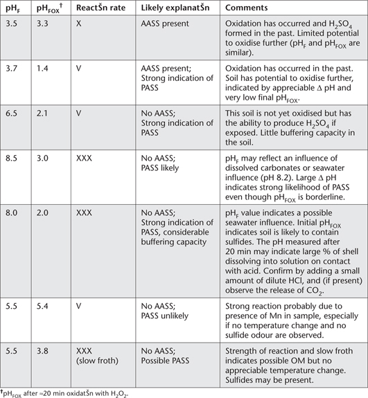
Table 20.6. Lime rate ‘look-up’ table for different values of pHFOX and two field soÕ texture classes. (Sourced from Plunkett et al. 2003, and Raymond and Rayment 2003).
|
Lime Required (kg/m3) |
|
pHFOX |
Fine & Medium soÕ texture |
Coarse soÕ texture |
0.25 |
374 |
85 |
0.30 |
289 |
66 |
0.35 |
232 |
54 |
0.50 |
140 |
33 |
0.75 |
79 |
19 |
1.00 |
53 |
13 |
1.25 |
38 |
9 |
1.50 |
30 |
7 |
2.00 |
20 |
5 |
2.50 |
14 |
4 |
3.00 |
11 |
3 |
4.00 |
7 |
2 |
5.50 |
5 |
1 |
Ahern CR and McElnea AE (2004) Alkali cation (calcium and magnesium) methods. In Laboratory Methods Guidelines 2004 – Acid Sulfate Soils. Queensland Acid Sulfate Soil Technical Manual. (Eds CR Ahern, AE McElnea and LA Sullivan) Department of Natural Resources and Mines, Indooroopilly, Queensland.
Ahern CR, Blunden B, Sullivan LA and McElnea AE (2004a) Soil sampling, handling, preparation and storage for analysis of dried samples. Section B: Dried Samples. In Laboratory Methods Guidelines 2004 – Acid Sulfate Soils. Queensland Acid Sulfate Soil Technical Manual. (Eds CR Ahern, AE McElnea and LA Sullivan) Department of Natural Resources and Mines, Indooroopilly, Queensland.
Ahern CR, McElnea AE and Sullivan LA (2004b) Overview of analytical methods for dried and ground ASS samples. In Laboratory Methods Guidelines 2004 – Acid Sulfate Soils. Queensland Acid Sulfate Soil Technical Manual. (Eds CR Ahern, AE McElnea and LA Sullivan) Department of Natural Resources and Mines, Indooroopilly, Queensland.
Ahern CR, Stone Y and Blunden B (1998) Acid sulfate soils management guidelines. In Acid Sulfate Soil Manual August 1998. (Eds Y Stone, CR Ahern and B Blunden). Acid Sulfate Soils Management Advisory Committee, NSW Agriculture, Wollongbar, NSW.
Ahern CR, Sullivan LA and McElnea AE (2004c) Acid Sulfate Soils, Laboratory Methods Guidelines Version 2.1. Queensland Acid Sulfate Soil Technical Manual. Department of Natural Resources and Mines, Indooroopilly, Queensland.
Anon (2006) Safety in laboratories–Fume cupboards. AS/N.ZS 2243.8:2006. Committee CH–026, Standards Australia.
Anon (2008) AS 4969.0–2008–Analysis of acid sulfate soil – Dried samples – Methods of test – Introduction and definitions, symbols and acronyms; AS 4969.1–2008-Analysis of acid sulfate soil – Dried samples – Methods of test – Pre-treatment of samples; AS 4969.2–2008-Analysis of acid sulfate soil – Dried samples – Methods of test – Determination of pHKCl and titratable actual acidity (TAA); AS 4969.3–2008–Analysis of acid sulfate soil – Dried samples – Methods of test – Determination of peroxide pH (pHOX), titratable peroxide acidity (TPA) and excess acid neutralizing capacity (ANCE); AS 4969.4–2008–Analysis of acid sulfate soil – Dried samples – Methods of test – Determination of 1M potassium chloride-extractable sulfur (SKCl), calcium (CaKCl) and magnesium (MgKCl); AS 4969.5–2008–Analysis of acid sulfate soil – Dried samples – Methods of test – Determination of peroxide sulfur (SP), calcium (CaP) and magnesium (MgP); AS 4969.6–2008–Analysis of acid sulfate soil – Dried samples – Methods of test – Determination of acid-extractable sulfur in soil residue after peroxide oxidation (SRAS); AS 4969.7–2008–Analysis of acid sulfate soil – Dried samples – Methods of test – Determination of chromium reducible sulfur (SCR); AS 4969.8–2008–Analysis of acid sulfate soil – Dried samples – Methods of test – Determination of hydrochloric acid-extractable sulfur (SHCl), calcium (CaHCl) and magnesium (MgHCl); AS 4969.9–2008–Analysis of acid sulfate soil – Dried samples – Methods of test – Calculation of titratable sulfidic acidity (TSA); AS 4969.10–2008–Analysis of acid sulfate soil – Dried samples – Methods of test – Calculation of peroxide oxidizable sulfur (SPOS), reacted calcium (CaA) and reacted magnesium (MgA); AS 4969.11–2008–Analysis of acid sulfate soil – Dried samples – Methods of test – Calculation of net acid-soluble sulfur (SNAS), calcium (CaNAS) and magnesium (MgNAS). Standards Australia, Sydney.
Canfield DE, Raiswell R, Wetsrich JT, Reaves CM and Berner RA (1986) The use of chromium reduction in the analysis of reduced inorganic sulfur in sediments and shales. Chemical Geology 54, 149–155.
Dent D (1986) Acid sulphate soils: a baseline for research and development. IRLI Publication No. 39 pp 183–184. International Institute for the Land Reclamation and Improvement, Wageningen, The Netherlands.
Dent D (1992) Reclamation of acid sulfate soil. Advances in Soil Science 17, 70–122.
Dent D and Bowman G (1996) Quick, quantitative assessment of the acid sulphate hazard. CSIRO Australia, Division of Soils Divisional Report No. 128.
Gardner EA, Rayment GE, Cook FJ, Powell B, Watling KM and Hey K (2002) Acid sulfate soils, their distribution, behaviour and management as related to sugarcane production. In Managing Soils, Nutrients and the Environment for Sustainable Sugarcane Production, Course Manual. (Ed. RC Bruce) pp. 69–88. CRC for Sustainable Sugar Production, James Cook University, Townsville, Queensland.
Latham NP, Denny SL, McElnea AE and Ahern CR (2000) Experimental evidence for modification to the peroxide digest of POCAS. In Acid Sulfate Soils: Environmental Issues, Assessment and Management, Technical Paper, Brisbane, 20–22 June, 2000. (Eds CR Ahern, KM Hey, KM Watling and VJ Eldershaw). Department of Natural Resources, Indooroopilly, Queensland.
McElnea AE and Ahern CR (2004a) Actual acidity method. In Laboratory Methods Guidelines 2004–Acid Sulfate Soils. Queensland Acid Sulfate Soil Technical Manual. (Eds CR Ahern, AE McElnea and LA Sullivan) Department of Natural Resources and Mines, Indooroopilly, Queensland.
McElnea AE and Ahern CR (2004b) Potential actual acidity methods. In Laboratory Methods Guidelines 2004–Acid Sulfate Soils. Queensland Acid Sulfate Soil Technical Manual. (Eds CR Ahern, AE McElnea and LA Sullivan) Department of Natural Resources and Mines, Indooroopilly, Queensland.
McElnea AE and Ahern CR (2004c) Sulfur 4M HCl extraction (SHCl). In Laboratory Methods Guidelines 2003–Acid Sulfate Soils. Queensland Acid Sulfate Soil Technical Manual. (Eds CR Ahern, AE McElnea and LA Sullivan) Department of Natural Resources and Mines, Indooroopilly, Queensland.
McElnea AE, Ahern CR and Menzies NW (2002a) Improvements to peroxide oxidation methods for analysing sulfur in acid sulfate soil. Australian Journal of Soil Research 40, 1115–1132.
McElnea AE, Ahern CR and Menzies NW (2002b) The measurement of actual acidity in acid sulfate soils and the determination of sulfidic acidity in suspension after peroxide oxidation. Australian Journal of Soil Research 40, 1133–1157.
Morse JW and Cornwell JC (1987) Analysis and distribution of iron sulfide minerals in recent anoxic marine sediments. Marine Chemistry 27, 55–69.
Plunkett TM, Raymond M and Rayment GE (2003) Field Guide: Quick Testing for Acid Sulfate Soils and their Lime Requirements. QNRM03350. CRC Sugar and Department of Natural Resources and Mines, Indooroopilly, Queensland.
Powell B and Ahern CR (2000) Nature origin and distribution of acid sulfate soils: Issues for Queensland. Acid Sulfate Soils. Environmental Issues, Assessment and Management, Technical Papers, Brisbane, June 2000.
Raiswell R, Buckley F, Berner RA and Anderson TF (1988) Degree of pyritization of iron as a paleoenvironmental indicator of bottom-water oxidation. Journal of Sedimentary Petrology 58, 812–819.
Rayment GE, Raymond M and Balakrishnan T (2001) Quick field test for lime rates of pyritic drain-spoil in NSW canelands. Proceedings of the Australian Society of Sugar Cane Technologists 23, 58–63.
Rayment GE, Sadler R, Craig A, Noller B and Chiswell B (2003) Analysis of inorganic parameters. In Chemical Analysis of Contaminated Land. (Eds KC Thompson and CP Nathanail) pp. 99–131. Blackwell Publishing, CRC Press, Oxford.
Raymond MAA and Rayment GE (2003) Quick field test kit for acid sulfate soils in eastern Australian canelands. In Proceedings of the Workshop, Tools for Nutrient and Pollutant Management – Applications to Agriculture and Environmental Quality. (Eds LD Currie and JA Hanly) pp. 436–441. Fertilizer & Lime Research Centre (in conjunction with ASPAC) Occasional Report No. 17, Massey University, NZ.
Sammut J, Mellville MD, Callinan RB and Fraser GC (1995) Estuarine acidification: Impacts on aquatic biota of draining acid sulfate soils. Australian Geographical Studies 33, 89–100.
Smith J (2004) Chemical changes during oxidation of iron monosulfide-rich sediments. Australian Journal of Soil Research 42, 659–666.
Sullivan LA, Bush RT and McConchie DM (2000) A modified chromium-reducible sulfur method for reducing inorganic sulfur: optimum reaction time for acid sulfate soil. Australian Journal of Soil Research 38, 729–734.
Sullivan LA, Bush RT, McConchie D, Lancaster G, Haskins PG and Clark MW (1999) Comparison of peroxide oxidisable sulfur and chromium reducible sulfur methods for determination of reduced inorganic sulfur in soil. Australian Journal of Soil Research 37, 255–265.
Sullivan LA, Bush RT, McConchie D, Lancaster G, Clark M, Lin C and Saenger P (2004) Chromium reducible sulfur (SCr) – Method 22B. In Laboratory Methods Guidelines 2004–Acid Sulfate Soils. Queensland Acid Sulfate Soil Technical Manual. (Eds CR Ahern, AE McElnea and LA Sullivan) Department of Natural Resources and Mines, Indooroopilly, Queensland.
van Breeman N (1973) Soil forming processes in acid sulphate soils. In Acid Sulphate Soils. Proceedings of the International Symposium on Acid Sulphate Soils. 13–29 August 1972. Wageningen. (Ed H Dost) pp 66–129. International Institute of Land Reclamation and Improvement, Wageningen, The Netherlands.
Ward NJ, Sullivan LA, Bush RT and Lin C (2002a) Assessment of peroxide oxidation for acid sulfate soil analysis. 1. Reduced inorganic sulfur. Australian Journal of Soil Research 40, 433–442.
Ward NJ, Sullivan LA, Bush RT and Lin C. (2002b) Assessment of peroxide oxidation for acid sulfate soil analysis. 2. Acidity determination. Australian Journal of Soil Research 40, 443–454.
Watling KM, Ahern CR and Hey KM (2004) Acid sulphate soil field pH tests. Section H: Field tests. In Laboratory Methods Guidelines 2004–Acid Sulfate Soils. Queensland Acid Sulfate Soil Technical Manual. (Eds CR Ahern, AE McElnea and LA Sullivan) Department of Natural Resources and Mines, Indooroopilly, Queensland.
White I and Melville MD (1993) Treatment and containment of potential acid sulphate soils. Formation, distribution, properties and management of potential acid sulphate soils. CSIRO Centre for Environmental Mechanics, Technical Report No. 53.
White I, Melville MD, Sammut J, Wilson BP and Bowmen GM (1996) Downstream impacts from acid sulfate soils. In Downstream Impacts of Land Use. (Eds HM Hunter, AG Eyles and GE Rayment) pp. 165–172. Department of Natural Resources, Brisbane, Queensland.